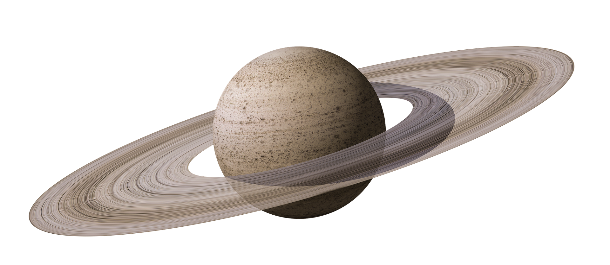
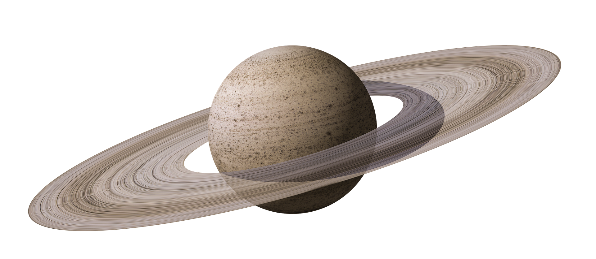

Solar system
And Planets

Solar System Planets
The main 8 planets are Mercury, Venus, Earth, Mars, Jupiter, Saturn, Uranus and Neptune.


 



Mercury- Mercury is the smallest planet in the Solar System and the closest to the Sun. Its orbit around the Sun takes 87.97 Earth days, the shortest of all the Sun's planets. It is named after the Roman god Mercurius (Mercury), god of commerce, messenger of the gods, and mediator between gods and mortals, corresponding to the Greek god Hermes (Ἑρμῆς). Venus- Venus is the second planet from the Sun. It is sometimes called Earth's "sister" or "twin" planet as it is almost as large and has a similar composition. As an interior planet to Earth, Venus (like Mercury) appears in Earth's sky never far from the Sun, either as morning star or evening star. Aside from the Sun and Moon, Venus is the brightest natural object in Earth's sky, capable of casting visible shadows on Earth at dark conditions and being visible to the naked eye in broad daylight. Earth- Earth is the third planet from the Sun and the only astronomical object known to harbor life. While large volumes of water can be found throughout the Solar System, only Earth sustains liquid surface water. About 71% of Earth's surface is made up of the ocean, dwarfing Earth's polar ice, lakes, and rivers. Mars- Mars is the fourth planet from the Sun and the second-smallest planet in the Solar System, only being larger than Mercury. In the English language, Mars is named for the Roman god of war. Mars is a terrestrial planet with a thin atmosphere (less than 1% that of Earth's), and has a crust primarily composed of elements similar to Earth's crust, as well as a core made of iron and nickel. Mars has surface features such as impact craters, valleys, dunes and polar ice caps. It has two small and irregularly shaped moons, Phobos and Deimos. Jupiter- Jupiter is the fifth planet from the Sun and the largest in the Solar System. It is a gas giant with a mass more than two and a half times that of all the other planets in the Solar System combined, but slightly less than one-thousandth the mass of the Sun. Jupiter is the third brightest natural object in the Earth's night sky after the Moon and Venus, and it has been observed since prehistoric times. It was named after the Roman god Jupiter, the king of the gods. Saturn- Saturn is the sixth planet from the Sun and the second-largest in the Solar System, after Jupiter. It is a gas giant with an average radius of about nine and a half times that of Earth. [23][24] It has only one-eighth the average density of Earth; however, with its larger volume, Saturn is over 95 times more massive. Uranus- Uranus is the seventh planet from the Sun. Its name is a reference to the Greek god of the sky, Uranus (Caelus), who, according to Greek mythology, was the great-grandfather of Ares (Mars), grandfather of Zeus (Jupiter) and father of Cronus (Saturn). It has the third-largest planetary radius and fourth-largest planetary mass in the Solar System. Neptune- Neptune is the eighth planet from the Sun and the farthest known planet in the Solar System. It is the fourth-largest planet in the Solar System by diameter, the third-most-massive planet, and the densest giant planet. It is 17 times the mass of Earth, and slightly more massive than its near-twin Uranus.